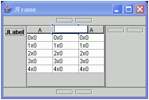

You can use the visual editor to arrange data in rows and columns using Swing's JTable and TableColumn.
When you drop a Swing JTable onto your design from the palette, the visual editor uses the table default table model (javax.swing.table.DefaultTableModel) to visualize the table. If you write your own Java code to assign a table model, the visual editor will parse the source and attempt to instantiate and apply the table model to the instance of the JTable in the Design view.

- If you want to manually add and define the columns, you need to set the autoCreateColumnsFromModel property to false. Then you can drop TableColumn components from the palette onto the JTable. If the autoCreateColumnsFromModel is set to true, the JTable will create as many columns as the table model returns from the getColumnCount() method.
- If you add your own columns, you can directly edit the column header values
in the design view. Select the column header and double click, then type the
column header value.
- You can also reorder the columns by selecting a column in the design view then dragging and dropping it in the new position.
- The JTable must be in a JScrollPane for the table headers to be displayed. The visual editor provides a JTable on JScrollPane component that you can drop onto your design.